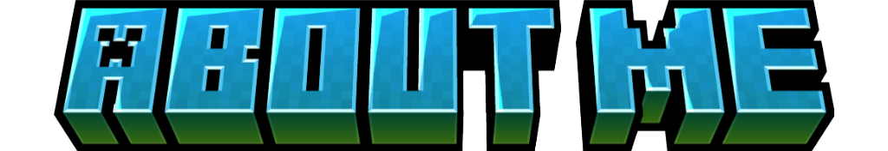

First of all, what is Minecraft? Minecraft is an immensely popular sandbox video game that allows players to explore, create, and survive in a vast and procedurally generated world made entirely of blocks. Developed by Mojang Studios, Minecraft has captivated millions of players worldwide with its endless possibilities and creative freedom.
In Minecraft, players find themselves in a pixelated 3D world where they can gather resources such as wood, stone, and ores by breaking blocks and then use these resources to craft tools, weapons, and various items. The game features different modes, including Survival Mode, where players must gather resources, build shelter, and fend off enemies like zombies, skeletons, and creepers to survive the night. Creative Mode offers unlimited resources and allows players to build and explore without the need to gather materials or worry about health and hunger.
One of Minecraft's most unique aspects is its procedurally generated world, meaning that each time you start a new game, the world is generated randomly, providing endless exploration opportunities. The world consists of various biomes such as forests, mountains, deserts, and oceans, each with its own distinct characteristics and resources.
Another standout feature of Minecraft is its block-based building system, where players can construct anything from simple houses to intricate castles, sprawling cities, and even functioning redstone contraptions. The game's simple yet versatile mechanics allow players to unleash their creativity and build virtually anything they can imagine.
Moreover, Minecraft offers multiplayer capabilities, allowing players to join servers and collaborate with others or engage in competitive gameplay modes. Players can also customize their experience through mods, which add new features, mechanics, and content to the game, further expanding its potential.
No journey through Minecraft would be complete without encountering its iconic mobs. From the iconic creeper to the elusive Enderman and the formidable iron golem, the game's diverse cast of creatures adds depth and excitement to every gameplay experience.
Overall, Minecraft is a game that encourages exploration, creativity, and collaboration, offering players a truly immersive and limitless gaming experience unlike any other. Its unique combination of open-world sandbox gameplay, procedural generation, and endless possibilities make it a standout title in the world of gaming.
Through our website, we aim to celebrate and explore these three pillars of Minecraft – its dimensions, biomes, and mobs – offering tips, guides, and insights to help players unlock the full potential of this beloved game. Whether you're a seasoned veteran or a newcomer to the world of Minecraft, join us on a journey of discovery and adventure in this extraordinary sandbox universe.
Prepare to embark on thrilling adventures beyond the familiar landscapes of the Overworld. Within this pixelated universe, three distinct dimensions beckon with their own unique challenges and treasures, each offering a glimpse into the infinite possibilities of the Minecraft universe.
In the expansive Overworld, where the journey begins, players encounter a vibrant world teeming with life and adventure. From verdant forests to towering mountains, the Overworld offers a wealth of biomes to explore and conquer. Whether you're constructing towering castles, delving deep into underground mines, or embarking on epic quests, the Overworld is a realm of endless possibilities where every block holds the promise of adventure and discovery.
A realm of fiery pits and soul sand valleys, the Nether presents formidable challenges as you navigate its treacherous terrain and face off against ghasts and piglins. Yet, amidst the danger, valuable resources such as glowstone and nether quartz await those brave enough to explore its depths. Venturing into this infernal landscape requires courage and preparation, but the rewards for those who dare to tread its paths are as rich as they are perilous.
The mysterious End beckons with its dark obsidian towers and the looming presence of the ender dragon. Surviving in this desolate realm requires cunning and strategy, as you navigate through the end cities and battle against the dragon's relentless assaults. But for those who persevere, the ultimate reward of claiming the dragon egg and accessing the End Gateway awaits. The End is a realm of mystery and danger, where only the bravest adventurers dare to venture in pursuit of glory and fortune.
Immerse yourself in the breathtaking diversity of Minecraft's biomes, each offering a distinct blend of terrain, vegetation, and wildlife. Traverse dense forests filled with towering trees and hidden treasures, where wolves roam freely and mushrooms flourish beneath the canopy.
Explore expansive deserts where the scorching sun beats down on vast stretches of sand, concealing ancient pyramids and desert temples beneath their surface. Venture into frozen tundras where snow blankets the landscape and polar bears roam in search of prey, their icy domain fraught with peril and adventure.
Whether you're navigating the towering peaks of the mountains or diving into the depths of the ocean, each biome holds its own secrets and challenges, waiting to be discovered by intrepid explorers.
Prepare to encounter a fascinating array of creatures as you journey through the vast expanses of Minecraft. From the iconic creepers that lurk in the shadows, their hiss signaling imminent danger, to the majestic ender dragons that rule the skies with their terrifying presence, the world is alive with a diverse ecosystem of wildlife.
Tame loyal companions such as wolves and ocelots to accompany you on your adventures, their loyalty unwavering as they defend you from hostile threats. Beware the undead hordes that emerge under the cover of night, their relentless pursuit driving you to seek refuge until the dawn breaks.
From the depths of the ocean to the heights of the mountains, every corner of Minecraft teems with life and danger, offering endless opportunities for discovery and adventure.
Greetings fellow Minecraft enthusiasts! Welcome to my Minecraft website! My username is KirbyPlayzJava, an enthusiastic Minecraft player dedicated to unraveling the wonders of this captivating sandbox universe. I'm thrilled to welcome you to my corner of the internet dedicated to all things Minecraft. As a lifelong gamer and explorer at heart, I've spent countless hours traversing the vast landscapes and uncovering the mysteries that lie within Minecraft's pixelated realms.
Ever since I was a young player in elementary school, Minecraft has been a constant companion on my journey through the digital realm. From the humble beginnings of building dirt huts and dodging creepers, to mastering the intricacies of redstone engineering and conquering the Ender Dragon, my love for Minecraft has only grown stronger with each passing year.
As a student of "Applications Development and Emerging Technologies", I saw an opportunity to combine my passion for Minecraft with the skills and knowledge I've acquired in the classroom. Thus, this website was born—a platform where players, both seasoned veterans and newcomers alike, can find guidance, inspiration, and a sense of community in their Minecraft adventures.
With a focus on three core aspects of the game—dimensions, biomes, and mobs—my goal is to provide comprehensive insights and resources that empower players to explore, create, and thrive in the vast and dynamic world of Minecraft. While I may have learned almost everything there is to know about Minecraft through years of gameplay, I remain eager to share my knowledge and experiences with others, and to continue learning and growing alongside the ever-evolving landscape of the game.
Through my website, I aim to share my passion for Minecraft and provide fellow players with valuable insights, tips, and inspiration to enhance their gaming experience. Whether you're seeking advice on building the ultimate fortress, mastering the art of redstone engineering, or simply embarking on epic adventures with friends, I'm here to guide you every step of the way.
Whether you're seeking tips for surviving the treacherous depths of the Nether, inspiration for building your dream home in a lush biome, or strategies for facing off against the formidable mobs that roam the land, you'll find a wealth of information and resources here to support you on your Minecraft journey. So grab your pickaxe, sharpen your sword, and let's embark on an adventure together through the endless possibilities of Minecraft!